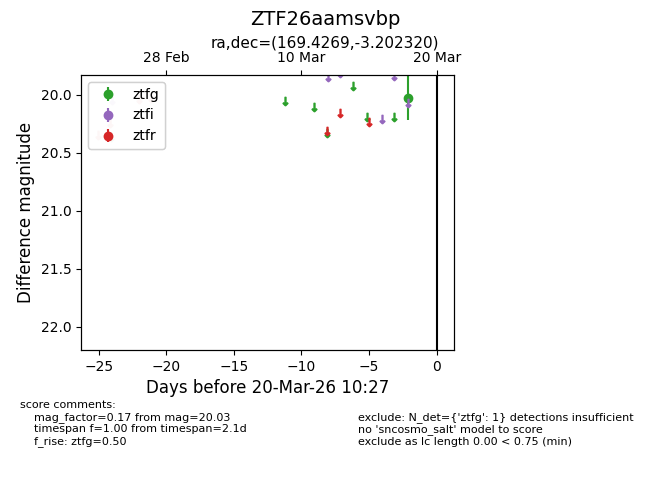
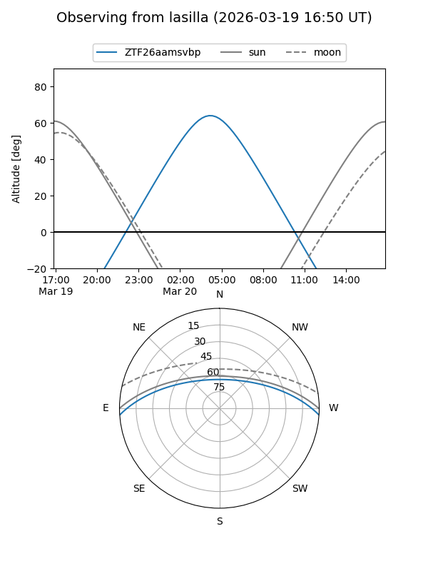
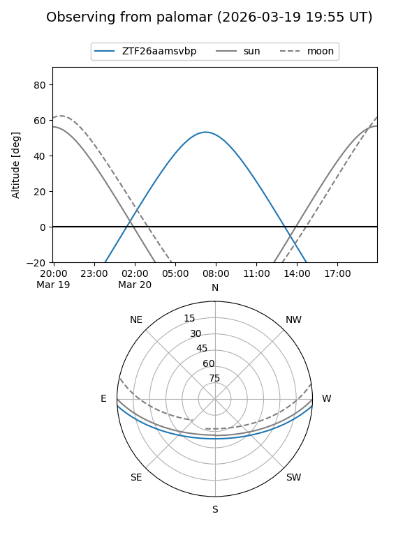

ZTF26aamsvbp
Target ZTF26aamsvbp at 2026-03-20 10:29
Aliases and brokers:
FINK: link
Lasair: link
ALeRCE: link
alt names
ZTF26aamsvbp (ztf,fink_ztf)
Coordinates:
equatorial (ra, dec) = 169.4269,-3.20232
equatorial (HMS+DMS) = 11:17:42.47,-03:12:08.35
galactic (l, b) = (262.5871,+52.17081)
Flags:
Photometry:
last ztfg=20.03
1 ztfg detections
Lightcurve

Visibility


Additional plots